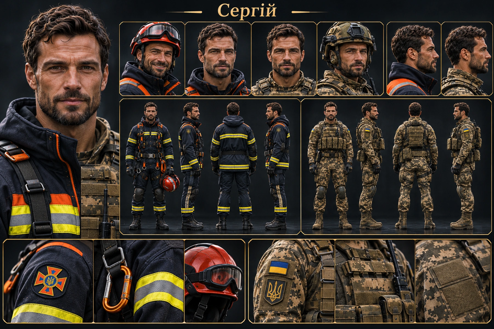

ОСНОВНА ІНФОРМАЦІЯ
Сергій — рятувальник
Бригадир рятувальників Об’єднаного людства. Керує пошуково-рятувальною групою та бере участь у складних евакуаційних операціях.
Статус: бригадир рятувальників Об’єднаного людства
Діяльність: пошук і порятунок людей, евакуація
Команда: рятувальники, пошуковці, медики й технічні фахівці
Вік: у перевірених уривках не зазначений
Здібності: надприродні здібності в сценах рятувальної операції не підтверджені
Зовнішність: за затвердженим авторським візуальним образом
ПОШУКОВО-РЯТУВАЛЬНА РОБОТА
Керівник на місці операції
Під час ліквідації наслідків ударів Сергій керує розгортанням групи, віддає команди й перевіряє інформацію від мешканців. Він не дозволяє працювати під нестійким перекриттям без укріплення, а коли поруч стається новий вибух, наказує відійти від будинку.
Коли з-під завалів долинає голос або стукіт, Сергій зупиняє двигуни й просить усіх замовкнути, щоб визначити напрямок. Під час пошуку команда використовує дрони, камери, домкрати, гідравлічний інструмент і технічне укріплення конструкцій.
ОБСТРІЛИ · ЕВАКУАЦІЯ
Рішення під тиском часу
Під час повторних обстрілів Сергій має враховувати і небезпеку для рятувальників, і потребу продовжувати пошук людей під уламками. Він відводить частину команди в безпечне місце, залишаючи на ділянці фахівців, без яких операцію неможливо продовжити.
Працюючи з Ольгою, він швидко пристосовує групу до використання порталів: рятувальники потрапляють у важкодоступні порожнини, обладнання доставляють безпосередньо до місця робіт, а постраждалих швидше передають медикам. Сергій сам продовжує працювати всередині завалів разом із рятувальниками.
ОЛЬГА · КОЛИШНЯ КОМАНДА
Повернення до спільної роботи
Сергій знає Ольгу з її попередньої роботи в рятувальній команді. Коли вона з’являється на місці чергового обстрілу, він дивується її поверненню, але не витрачає час на розпитування: під завалами залишаються люди.
Пізніше Сергій запитує, чи хоче Ольга повернутися. Вона відповідає, що вже повернулася. Вони продовжують працювати поруч, а Сергій підтримує її під час важких змін — зокрема приносить воду після тривалої роботи.
ХАРАКТЕР І СЮЖЕТНА РОЛЬ
Відповідальність за людей
У наявних епізодах Сергій постає зібраним керівником, який зберігає порядок під час обстрілів і не дозволяє ризикувати людьми без потреби. Він уважний до сигналів постраждалих, наполегливо продовжує пошук і не припиняє роботу, доки залишається шанс когось урятувати.
Його сюжетна роль пов’язана з рятувальною службою та поверненням Ольги до колишньої команди. Вік, родина, походження й особисте минуле в перевірених фрагментах не встановлені.